ggPopi is a ggplot2 extension package for population
genetics workflows. The package keeps each module in the same tidy
shape:
-
import_*()functions create typed S3 objects. -
plot_*()functions return fullggplotobjects. -
ggpop()+geom_*()build layered ggplot extensions. - Advanced compatibility helpers remain exported for users who need original-package behavior.
The package name is ggPopi; the core layered constructor
remains ggpop() for API continuity.
Module API map
| Module | Import | Direct plot | ggplot extension path | Advanced / compatibility |
|---|---|---|---|---|
| GWAS Manhattan | import_gwas() |
plot_manha() |
ggpop() + geom_manha() |
internal fastman-style layout |
| GWAS Q-Q | import_gwas() |
plot_qq() |
ggpop() + ggpop::geom_qq() |
internal fastqq-style layout |
| PCA |
import_pca() / compute_pca()
|
plot_pca() |
ggpop() + geom_pca() |
compute_pca(method = "flashpca") |
| Admixture | import_admix() |
plot_admix() |
ggpop() + geom_admix() |
see compatibility article |
| Population statistics | import_stats() |
plot_stats() |
ggpop() + geom_stats() |
pixy and vcftools summaries |
| LD decay | import_ld_decay() |
plot_ld_decay() |
ggpop() + geom_ld_decay() |
PopLDdecay and PLINK summaries |
| Selective sweeps | import_selection() |
plot_selection() |
ggpop() + geom_selection() |
selscan and XPCLR scans |
| Introgression | import_introgression() |
plot_introgression() |
ggpop() + geom_introgression() |
Dsuite, genomics_general, TreeMix, and qpGraph summaries |
| Ne history | import_ne_history() |
plot_ne_history() |
ggpop() + geom_ne_history() |
PSMC, MSMC2, SMC++, and Stairway Plot 2 histories |
Core pattern
gwas <- import_gwas(ggpop_extdata("gwas", "gcta.mlma"), type = "gcta")
pca <- import_pca(
ggpop_extdata("pca", "gcta.eigenvec"),
type = "gcta",
eigenval = ggpop_extdata("pca", "gcta.eigenval"),
pop_group = ggpop_extdata("pop_group.txt")
)
admix <- import_admix(
ggpop_extdata("admixture"),
type = "admixture",
ind = ggpop_extdata("snp", "finalsnp_ld.fam"),
pop_group = ggpop_extdata("pop_group.txt")
)
stats <- import_stats(
ggpop_extdata("Population_genomics_statistics", "pixy"),
type = "pixy"
)
ld_decay <- import_ld_decay(
ggpop_extdata("ld_decay", "PopLDdecay"),
type = "poplddecay"
)
selscan_chr1 <- import_selection(
ggpop_extdata("selective_sweep", "selscan"),
ihs = "chr1.ihs.out.100bins.norm",
nsl = "chr1.nsl.out.100bins.norm",
xpehh = "chr1.xpehh.out.norm",
xpnsl = "chr1.xpnsl.out.norm",
type = "selscan"
)
introgression <- import_introgression(
ggpop_extdata("introgression", "genomics_general"),
type = "genomics_general"
)
ne_history <- import_ne_history(
ggpop_extdata("ne_history", "SMC++", "model.csv"),
type = "smcpp"
)Each importer returns a typed object:
class(gwas)
#> [1] "ggpop_gwas" "data.frame"
class(pca)
#> [1] "ggpop_pca" "data.frame"
class(admix)
#> [1] "ggpop_admix" "data.frame"
class(stats)
#> [1] "ggpop_stats" "data.frame"
class(ld_decay)
#> [1] "ggpop_ld_decay" "data.frame"
class(selscan_chr1)
#> [1] "ggpop_selection" "data.frame"
class(introgression)
#> [1] "ggpop_introgression" "data.frame"
class(ne_history)
#> [1] "ggpop_ne_history" "data.frame"Tidy plotting style
Every module has two user-facing plotting paths. Use the direct
plot_*() function when you want the reference plot
immediately, or use ggpop() plus the module
geom_*() when you want to compose with other ggplot
layers.
The direct path:
gwas |>
plot_manha()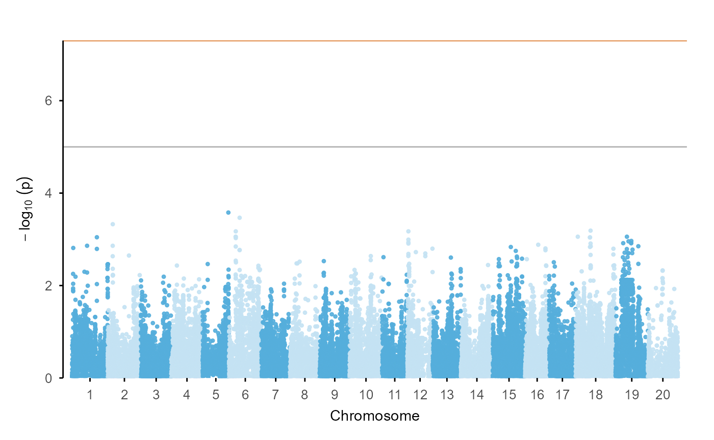
The ggplot extension path:
gwas |>
ggpop() +
geom_manha()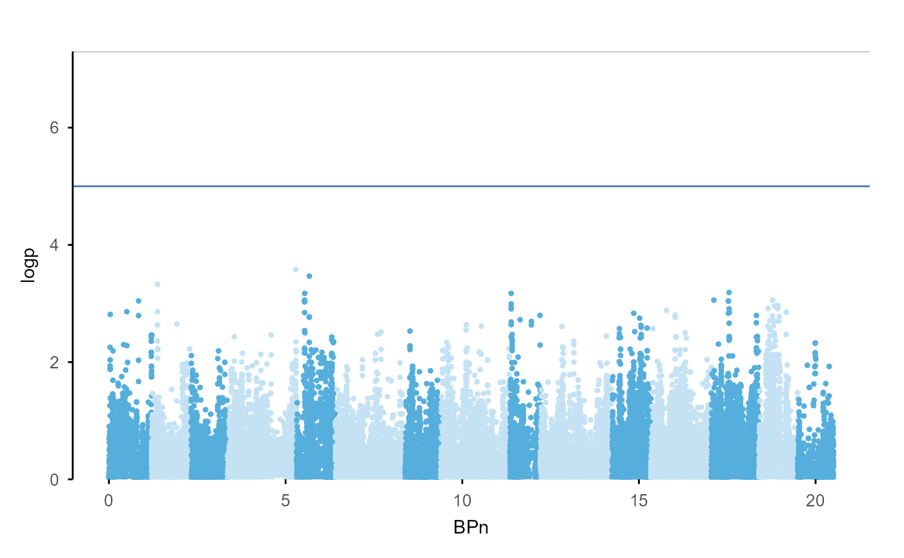
The same pattern applies across modules:
gwas |> ggpop() + ggpop::geom_qq()
#> Registered S3 method overwritten by 'ggpop':
#> method from
#> print.ggpop_palette_scheme ggPopi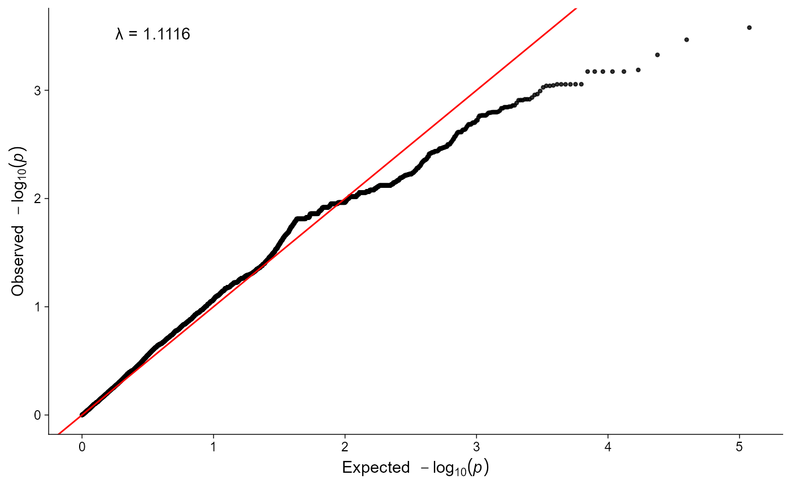

admix |> ggpop() + geom_admix(k = 3, order_group = TRUE)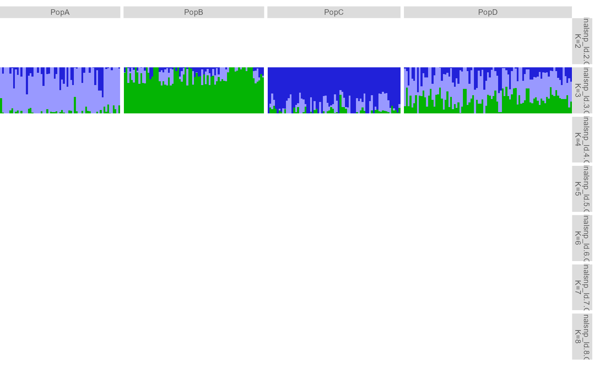
Population groups and discrete colours
Population grouping uses a simple two-column file:
head(import_pop_group(ggpop_extdata("pop_group.txt")))
#> sample_id pop
#> 1 P001 PopC
#> 2 P004 PopB
#> 3 P006 PopC
#> 4 P009 PopA
#> 5 P010 PopB
#> 6 P012 PopBThe same file drives PCA colours and admixture group labels:
pca |> plot_pca()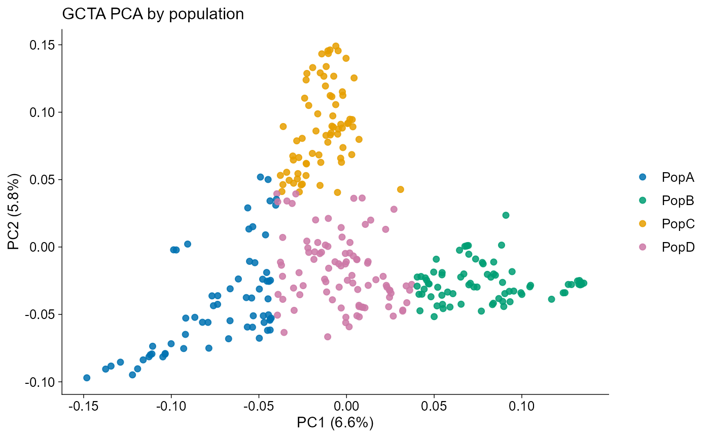
admix |> plot_admix(k = 3, order_group = TRUE, show_group_labels = TRUE)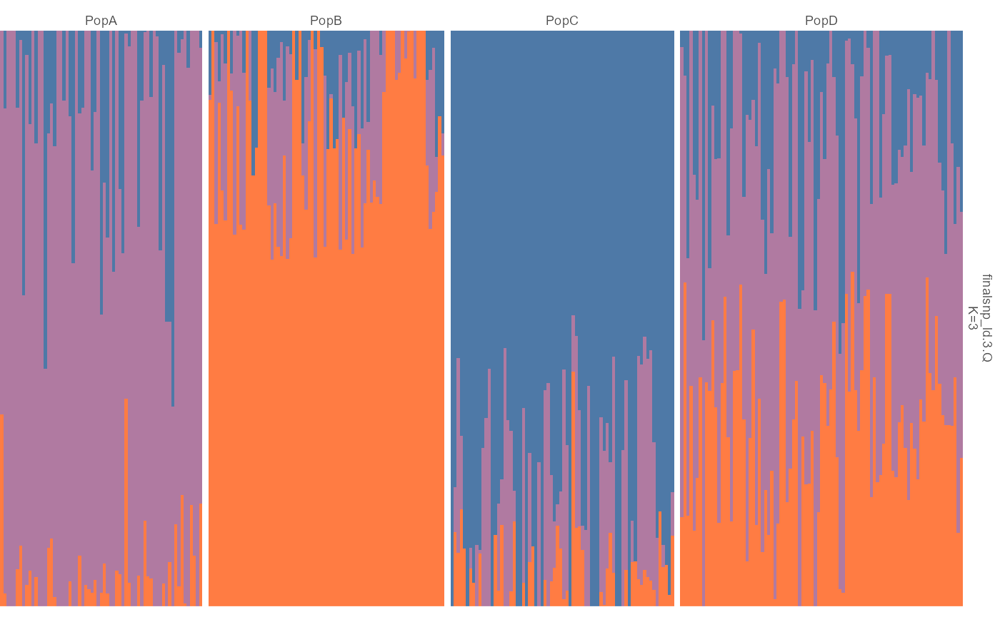
All categorical colours use a unified discrete palette entry:
ggpop_palette(4, "population")
#> [1] "#4E79A7" "#59A14F" "#76B7B2" "#EDC948"
ggpop_palette(8, "admixture")
#> [1] "#4E79A7" "#F28E2B" "#E15759" "#76B7B2" "#EDC948" "#9C755F"
#> [7] "#2F4B7C" "#FF7C43"Population statistics
The statistics module uses the same tidy pattern for windowed summaries from pixy or vcftools outputs:
stats |>
plot_stats(stat = "all", chr = "chr2L")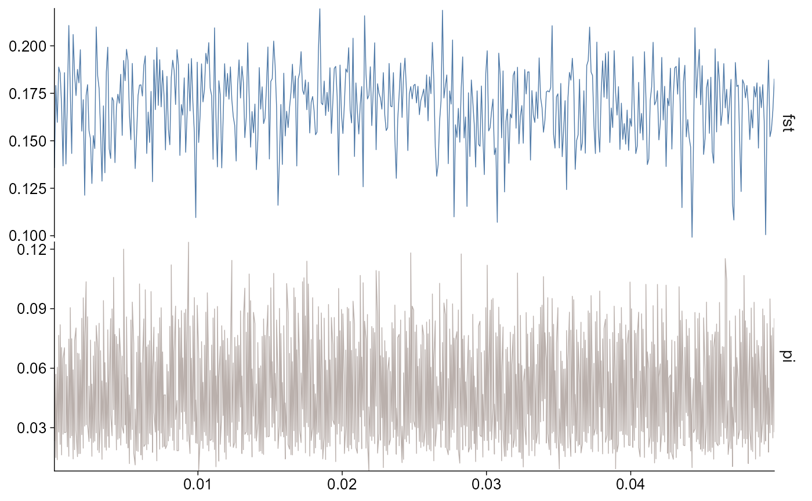
The layered path filters facets to the requested statistics:
stats |>
ggpop() +
geom_stats(stat = c("fst", "pi"), chr = "chr2L")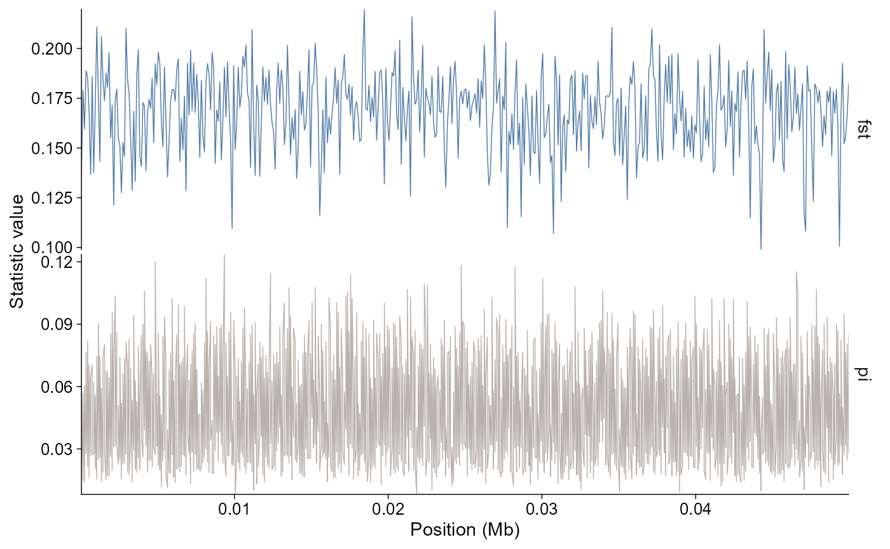
LD decay
LD decay summaries use the same direct and layered plotting shape.
PopLDdecay *.stat.gz files are imported directly, while
PLINK pairwise LD files can be summarized into distance bins. Population
labels follow the package-wide pop_group.txt convention
when file labels need to be mapped to groups.
ld_decay |>
plot_ld_decay(style = "point")
The same data can be drawn as a curve:
ld_decay |>
plot_ld_decay(style = "line")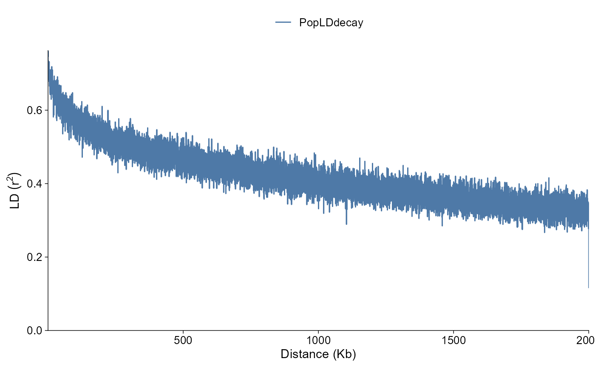
Selective sweep scans
Selection scan outputs use the same direct and layered plotting
shape. The direct plot can show signed values or absolute score
magnitude, and thresholds can be fixed values or filtered-data
quantiles. Genome-wide calls default to a Manhattan-like chromosome
axis; calls with chr, start, or
end default to a single-region view.
selscan_chr1 |>
plot_selection(
stat = c("ihs", "nsl", "xpehh", "xpnsl"),
chr = "1"
)
Introgression
Introgression summaries use the same direct and layered plotting shape. Windowed Dsuite and genomics_general outputs default to chromosome-wise window points on a Manhattan-like genome axis; Dsuite Dtrios summaries use a trio-level dot plot; graph edge tables use a compact edge diagram.
introgression |>
plot_introgression(stat = c("D", "fdM"))
The layered path follows the same grammar:
introgression |>
ggpop() +
geom_introgression(stat = "D")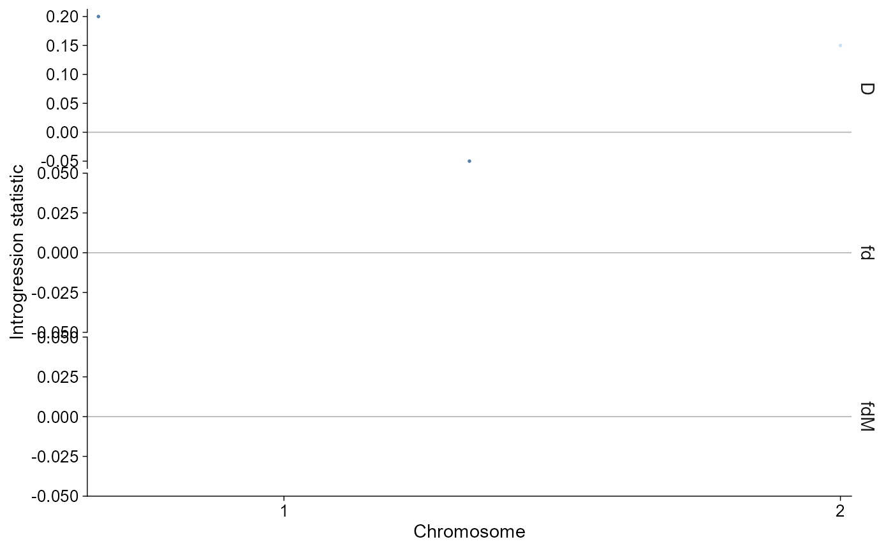
Ne history
Effective population size histories from PSMC, MSMC2, SMC++, and Stairway Plot 2 use the same direct and layered plotting shape. SMC++ histories are drawn as curves, while PSMC, MSMC2, and Stairway Plot 2 interval histories default to step curves. Time and Ne axes are log-scaled by default.
ne_history |>
plot_ne_history()
The layered path follows the same grammar:
ne_history |>
ggpop() +
geom_ne_history()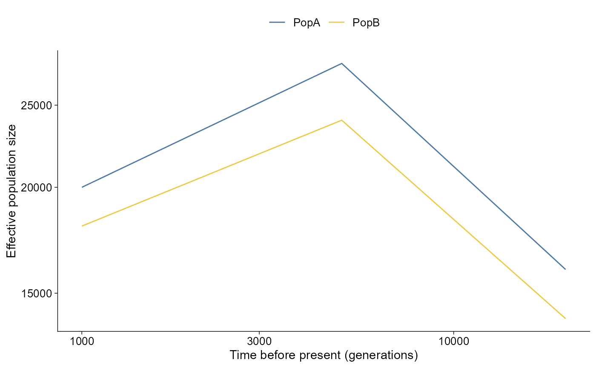
What to use
- Use
plot_manha()andggpop() + geom_manha()for Manhattan plots. - Use
plot_qq()andggpop() + ggpop::geom_qq()for Q-Q plots. - Use
plot_pca()andggpop() + geom_pca()for PCA plots. - Use
plot_admix()andggpop() + geom_admix()for admixture plots. - Use
plot_stats()andggpop() + geom_stats()for windowed population statistics. - Use
plot_ld_decay()andggpop() + geom_ld_decay()for LD decay summaries. - Use
plot_selection()andggpop() + geom_selection()for selective sweep scans. - Use
plot_introgression()andggpop() + geom_introgression()for introgression summaries. - Use
plot_ne_history()andggpop() + geom_ne_history()for effective population size histories. - Treat the direct
plot_*()functions as the reference style;geom_*()is the same look inside a ggplot composition. - Use the compatibility article only when you need original
pophelperworkflows.